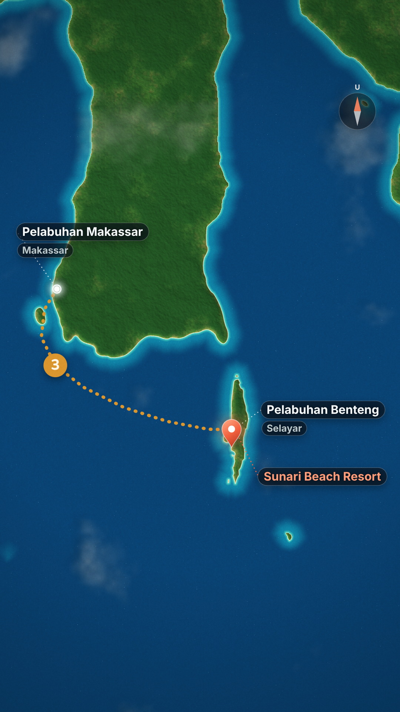

Rute ke SunaRi
Travel guide · Selayar
Rute ke
SunaRi
Pulau Selayar, di ujung selatan Sulawesi. Ketuk untuk melihat jalannya →
01 / 07
@sunaribeachresortselayar
Rute ke SunaRi
Sulawesi Selatan
Dari Makassar,
selangkah lagi
Pulau Selayar ada di Laut Flores, di seberang Bira. Bisa lewat udara maupun laut.
02 / 07
@sunaribeachresortselayar
Rute ke SunaRi · 03/07
Pilih jalanmu
Tiga rute
menuju senja
1
Udara
tercepat
2
Darat & feri
scenic route
3
Kapal langsung
tanpa transit
Rute ke SunaRi · 04/07
1
Opsi 1 · Jalur udara
Makassar → Bandara H. Aroeppala
±45 menit
Bandara → SunaRi (mobil)
±10–15 menit
Jadwal penerbangan menyesuaikan maskapai, cek H-7.
Rute ke SunaRi · 05/07
2
Opsi 2 · Darat & feri
Terminal Malengkeri → Bira
±4–5 jam
Feri Bira → Pamatata (ASDP)
±2 jam
Pamatata → SunaRi (mobil)
±1–1,5 jam

Rute ke SunaRi · 06/07
3
Opsi 3 · Kapal langsung
KM Dharma Kartika III → Benteng
±10–11 jam
Benteng → SunaRi (mobil)
±20–30 menit
Berangkat malam, tiba pagi · tidak setiap hari.
Rute ke SunaRi
Sampai di Selayar
Kami
jemput
Anda
Dari Bandara Aroeppala, Pelabuhan Pamatata & Benteng (berbayar). Kabari jadwal kedatangan via WhatsApp
0821-8903-3044
.
Tempel stiker tautan WhatsApp
07 / 07
@sunaribeachresortselayar